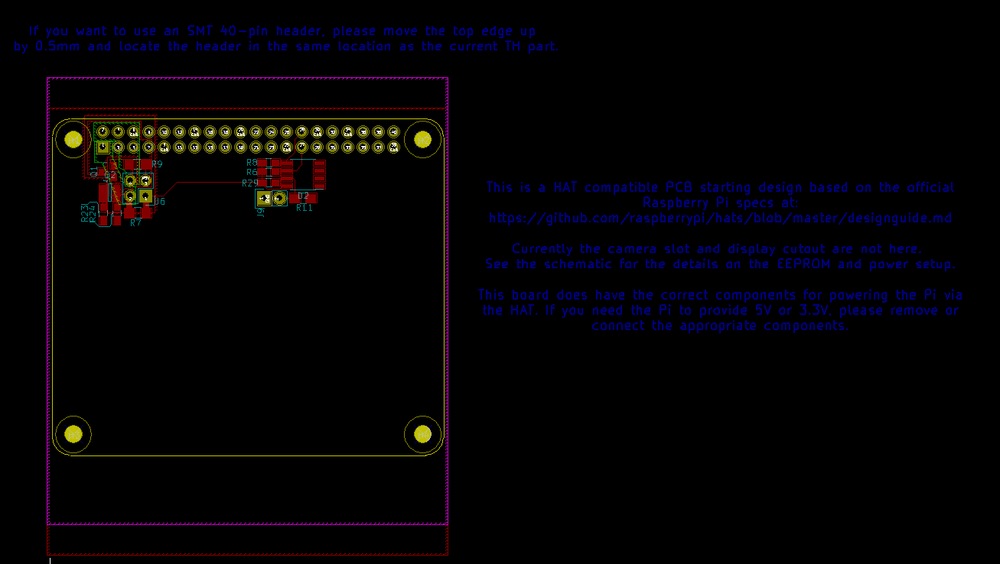

This project template is created to the spec from the Raspberry Pi Foundation B+ ADD-ON BOARD / HAT DESIGN GUIDE .
This base project includes the PCB edge per the spec with the 40-pin header and mounting holes in the correct position. It also includes the components for powering the Pi from 5V using the HAT. You will need to configure this to suit your design. An EEPROM is in place as specified for a HAT. It will require some specific programming to give the Pi an ID for your HAT to automatically load the required drivers and configuration. Please see the official design guide for details.
The board outline looks like the following:

See project files for licensing details. This project is open source.(c)2017 Jon Buford